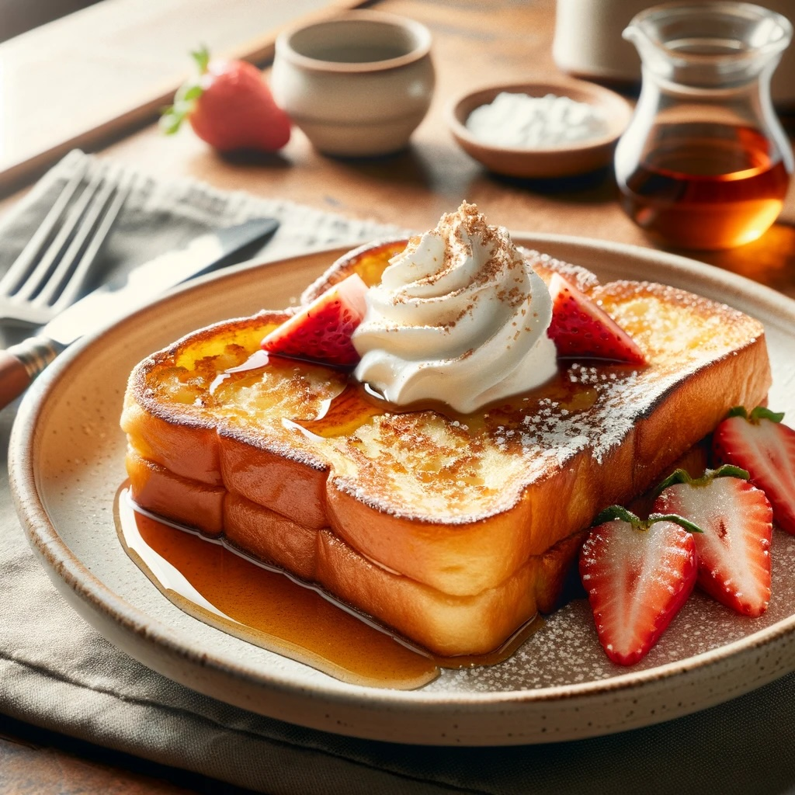

French Toast

This delicious staple is an easy-to-make variation on French Toast.
My variation calls for honey instead of syrup, and baguettes instead of bread. Great solution for use of slightly old baguettes.
Ingredients
- baguettes
- milk 1/2 cup
- 4-5 eggs
- butter
- honey
Steps
- Slice the baguettes into half-inch thick slices
- Break the eggs into a bowl and mix in with milk until consistent and slightly aerated.
- Soak several of the slices in the custard.
- Heat a skillet to medium heat and melt a teaspoon of butter.
- Cook (fry?) the slices over medium heat, turning regularly.
- Serve with honey drizzled or on the side as preferred.